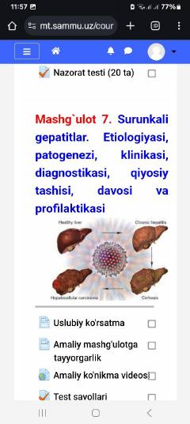

PSBolalarda surunkali gepatitlar diagnostikasi va davolash usullariga bag'ishlangan o'quv qo'llanma.
Ushbu o'quv materialida bolalarda uchraydigan surunkali gepatitlar kasalligining etiologiyasi, patogenezi, klinik belgilari, tashxislash va davolash usullari bayon etilgan. Shuningdek, amaliy mashg'ulotlar uchun nazorat testlari va uslubiy ko'rsatmalar berilgan.